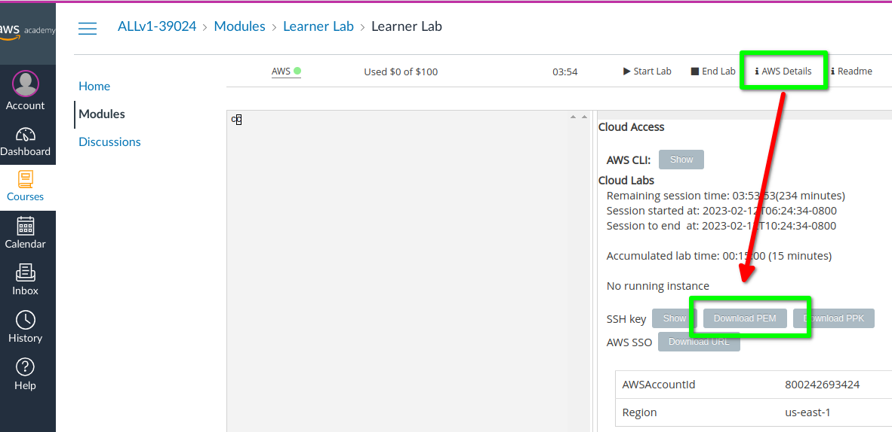

AWS y EC2¶
Práctica de creación de uan instancia EC2 en AWS
1. Abrir la consola AWS desde Lab¶
Tiene enlaces en el tema de introducción de cómo hacerlo. Acceder a AWS Academy, luego al Learner Lab, etc.
2. Crear instancia EC2¶
Tiene como referencia este vídeo cómo crear un instancia EC2 en AWS Academy.
Los pasos a dar son:
- Seleccionar una imagen de la capa gratuita (en este ejemplo se usa Debian, pero podría usarse Ubuntu o una AMI Linux de AWS).
- Seleccionar un tipo de instancia de la capa gratuita.
-
Usar el par de claves de inicio de sesión
vockey(accesibles en la plataforma de Learner Lab en "AWS Details")
-
Crear un grupo de seguridad que permita trafico ssh, HTTP y HTTPS (se puede modificar posteriormente),
- Dejar el almacenamiento por defecto
- Lanzar la instancia.
En la consola AWS puede comprobar el estado de la instancia y sus detalles, en particular su nombre e IP públicos. También se puede acceder al grupo de seguridad creado, etc.
Nota: puede que le resulte más cómodo trabajar con un par de claves creadas (previamente o en el momento de lanzar la instancia). En este caso al usar Linux se usa el formato pem y tipo ED255129. Al pulsar el botón "Crear par de claves" se descarga el fichero con la clave privada creada que usará luego para la conexión ssh.
3. Conexión ssh a la instancia EC2¶
Desde el panel de la instancia en ejecución puede usar el botón "Conectar" y acceder a la información de cómo conectarse a la instancia.
En el caso de ssh hay una pestaña con instrucciones y el comando necesario.
4. Instalar servidor web¶
Para instalar un servidor web debe estar conectado a la instancia con ssh. Una vez conectado puede instalar nginx-light o nginx (o httpd):
admin@ip-172-31-50-215:~$ sudo apt update
admin@ip-172-31-50-215:~$ sudo apt install nginx
admin@ip-172-31-50-215:~$
Puede probar el servidor en la propia instancia EC2 con curl
admin@ip-172-31-50-215:~$ curl localhost
<!DOCTYPE html>
<html>
....
<p><em>Thank you for using nginx.</em></p>
</body>
</html>
admin@ip-172-31-50-215:~$
Puede probar el acceso externo con un navegador usando la IP pública (o el nombre público) de la instancia. Tenga en cuenta que sólo podpuede acceder mediante HTTP (no https).
5. Detener las instancias¶
Una vez terminado el ejercicio no olvide:
- Detener las instancias.
- Si no son necesarias posteriormente Terminarlas.
- Cerrar la sesión en la consola AWS.
- Detener el laboratorio en el Learner Lab.
6. Script en lanzamiento de la instancia¶
Se podría haber realizado la instalación del servidor web mediante un script en el momento de crear la instancia. El lugar para incluir estos scripts es el apartado "Detalles Avanzados" durante el lanzamiento de la imagen. En ese apartado está la opción de incluir "Datos de usuario". Tiene maś información en este enlace: https://docs.aws.amazon.com/es_es/AWSEC2/latest/UserGuide/user-data.html
El script podría ser similar a este (dependerá de la imagen elegida y de la aplicación a instalar):
#!/bin/bash
sudo apt update
sudo apt install -y nginx
El script dependerá del sistema operativo de la imagen elegida. En el caso de la imagen de AWS el gestor de paquetes es yum y sería algo similar a
#!/bin/bash
sudo yum update -y
sudo yum install httpd -y
sudo systemctl start httpd
sudo systemctl enable httpd
7. Plantillas de lanzamiento¶
En AWS Academy, una plantilla de lanzamiento (launch template) es un recurso que define la configuración para lanzar instancias de EC2, incluyendo la AMI, el tipo de instancia, el par de claves, los grupos de seguridad y otros parámetros. Permite estandarizar y simplificar el proceso de creación de instancias.
En este caso es posible incluir el script de instalación en la plantilla. Tiene maś información en este enlace: https://docs.aws.amazon.com/es_es/AWSEC2/latest/UserGuide/user-data.html.
8. IP elástica¶
Las IP asignadas a las instancias (y sus nombres) no son fijos, cambian al detener o reiniciar la instancia EC2. Por lo tanto si detiene la instancia y la arranca más tarde la IP y su nombre asociado pueden cambiar.
Para evitarlo se puede usar una IP elástica, pero tenga en cuenta que tendrá coste aunque la instancia EC2 esté detenida.
Puede consultar estos recursos:
- Vídeo explicando uso IP elástica: https://www.youtube.com/watch?v=trZLt2jJp4c
- Docs AWS sobre IP elástica: https://docs.aws.amazon.com/es_es/AWSEC2/latest/UserGuide/elastic-ip-addresses-eip.html?icmpid=docs_ec2_console
9. DNS¶
Por otra parte podría querer usar una dominio propio para su instancia EC2. Tiene entre otras las siguientes opciones gratuitas:
- Dynu: https://www.dynu.com/
- Duckdns: https://www.duckdns.org/
- Listado de opciones gratuitas
Deberá asociar en el dominio creado la IP elástica de AWS.
10. Uso del comando scp¶
Si tiene en su equipo local su sitio web comprimido puede subirlo a la instancia EC2 con el comando scp cómo se indica en
Transfer files to a Linux instance using SCP
En este ejemplo podría ser:
# Format orden scp local -> AWS
# scp -i key-pair-name.pem /path/my-file ec2-user@instance-public-dns-name:path/
clases@vm$ scp -i vockey.pem 2048.zip admin@ip-172-31-50-215:
Y ya desde desde la instancia EC2 (en el caso de nginx):
admin@ip-172-31-50-215:~$ cd /var/www/html/
admin@ip-172-31-50-215:~$ sudo rm index*.html
admin@ip-172-31-50-215:~$ sudo unzip /home/admin/2048.zip
11. Ejercicio: Desplegar web¶
Como ejercicio puede desplegar un sitio web ya creado previamente (disponible en un fichero comprimido). Para ello:
- Debe acceder al directorio por defecto del servidor, en el caso de
ningxel directorio/var/www/html - Borrar el fichero índice
- Descomprimir el fichero comprimido
Algo similar a
admin@ip-172-31-50-215:~$ wget https://sanvalero-static-webs.s3.eu-west-1.amazonaws.com/breakout.zip
admin@ip-172-31-50-215:~$ cd /var/www/html/
admin@ip-172-31-50-215:~$ sudo rm index.nginx-debian.html
admin@ip-172-31-50-215:~$ sudo unzip /home/admin/breakout.zip